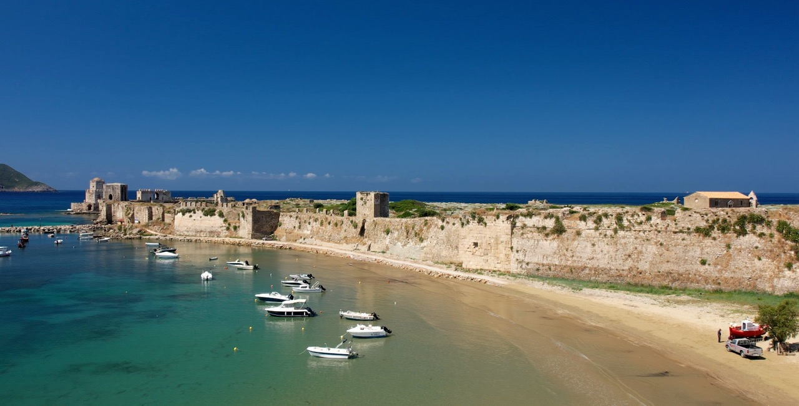
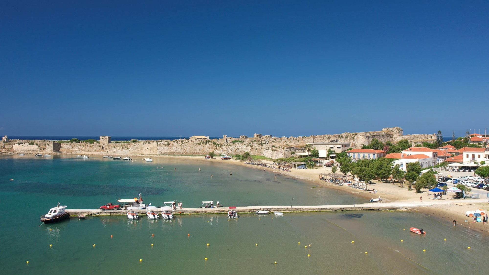
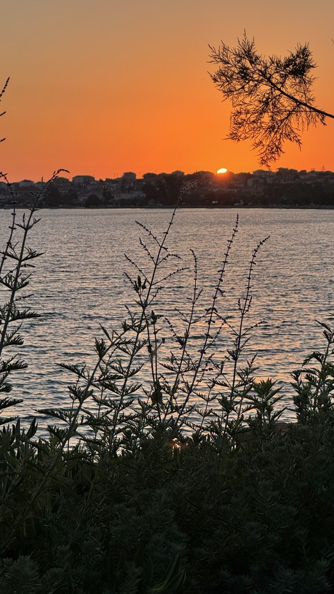
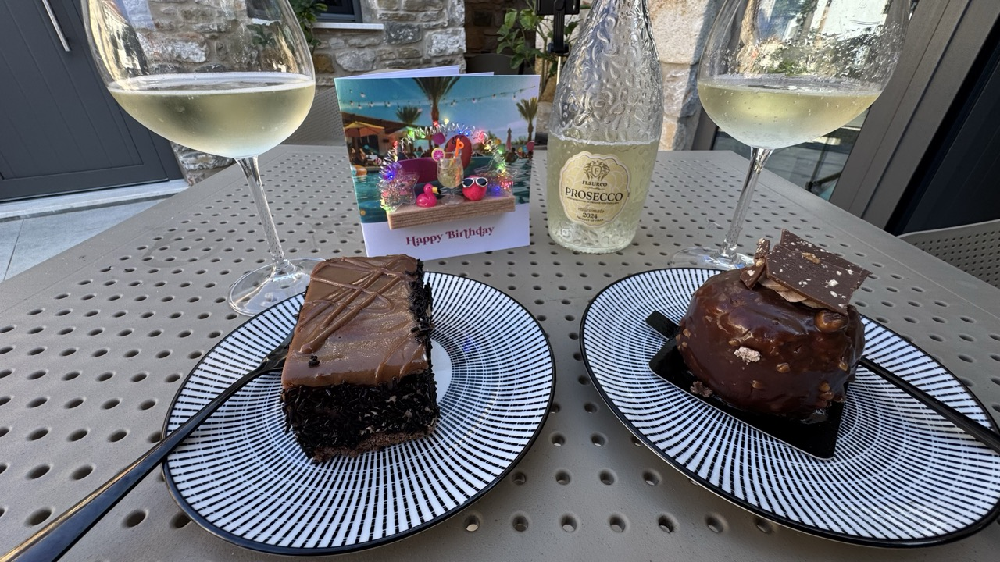
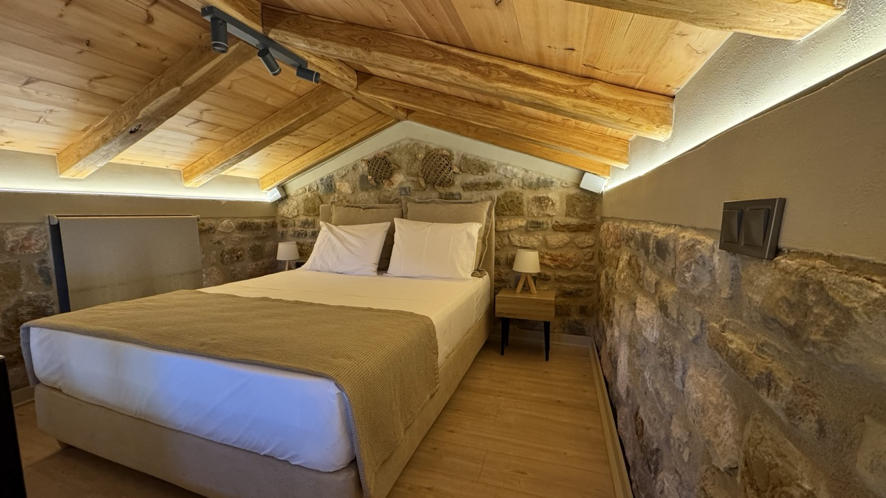
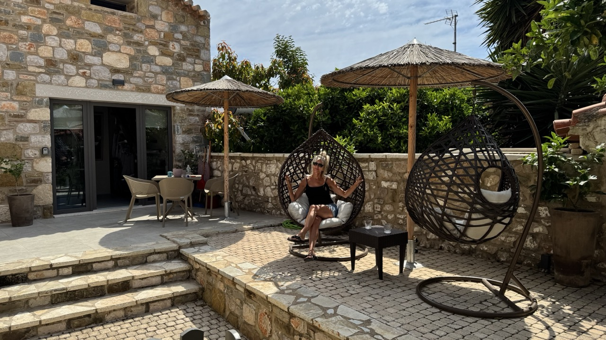

Some places are lovely to visit. Others get under your skin.
And then there are places like Methoni, where you arrive as a visitor, develop a daily routine involving coffee and pastries, get adopted by the locals and start wondering whether there's any real need to go home.
We may have got slightly carried away.
But this little seaside town on the southwestern coast of the Peloponnese has a way of making you feel at home. There's a beautiful sandy beach, a spectacular castle, traditional tavernas and a village atmosphere that encourages you to slow down.
And did we mention the beach bar?
WHAT IS METHONI LIKE?
Methoni is a small coastal town in the Messinia region of the southwestern Peloponnese, around an hour and a half's drive from Kalamata.
At first glance, it's a traditional Greek seaside town, with fishing boats, cafés, a sandy beach and family-run tavernas. Then you spot the castle, stretching across the headland beside the sea.
It's an impressive sight and gives Methoni a character that sets it apart from other coastal destinations in the region.
It's also well placed for exploring nearby Pylos, Finikounda and Koroni, making it a useful stop on a Greek road trip.
We love this corner of Greece because you can explore somewhere historic in the morning, swim in clear blue water in the afternoon and finish the day with a drink overlooking the sea.
Not a bad way to spend a holiday.
METHONI CASTLE: A MAGNIFICENT FORTRESS BESIDE THE SEA

The star attraction is undoubtedly Methoni Castle, one of the most impressive coastal fortresses in the Peloponnese.
The Venetians developed Methoni into an important stronghold during the medieval period, particularly from the 13th century onwards. Its strategic position made it a significant port for ships travelling between Venice and the eastern Mediterranean.
The fortress changed hands over the centuries, including during the Ottoman period, before Methoni eventually came under Greek control in the 19th century.
Today, you can cross the stone bridge into the castle and explore its enormous grounds, defensive walls, gateways and the remains of buildings that once stood within them.
It's easy to imagine the soldiers, merchants and ships that would once have filled this busy port.
Then there's us, wandering around in our shorts, trying to work out which camera angle makes the castle look most impressive.
History moves on.
One of the highlights is the Bourtzi Tower, the distinctive octagonal structure standing on a small rocky island just offshore. Connected to the main fortress by a narrow fortified causeway, it looks almost too dramatic to be real.
The tower has served different purposes throughout its history, including as part of the fortress's defences and later as a prison.
Film fans may also recognise Methoni Castle as a location associated with Christopher Nolan's adaptation of Homer's The Odyssey, starring Matt Damon, which filmed in the Peloponnese.
From Venetian soldiers to Hollywood film crews, Methoni has certainly hosted an interesting collection of visitors.
METHONI BEACH: BEAUTIFUL VIEWS AND VERY LITTLE EFFORT

The sandy beach is another reason to visit Methoni.
Close to the town, it offers clear water and lovely views towards the castle. You can spend the morning swimming, wander into town for lunch and return to the beach without organising an expedition involving the car, three bags and a military-style timetable.
The bay generally shelves gently, although swimming conditions can vary.
It's also ideal for the sort of swimming that involves very little actual swimming.
You know the sort. A gentle paddle, a little float, perhaps a few token arm movements so you can claim to have exercised, followed by a return to your sun lounger.
We call it maintaining a balanced lifestyle.
THE SEABREEZE: OUR FAVOURITE BEACHFRONT SPOT
Every good seaside town needs somewhere to sit with a drink, watch the waves and convince yourself you really ought to stay for just one more.
In Methoni, we found our place: The Seabreeze.
With comfortable seating, loungers and lovely views towards the Venetian castle and Sapienza Island, it quickly became one of our favourite places to spend an evening.
We developed a simple routine: a couple of drinks, something to eat and the sea in front of us.
Then we discovered the small plate.
Now, we're not entirely sure who decided to call it a small plate, but we'd quite like to have a word with them.
Our particular favourite was a beer accompanied by what the menu described as a small plate of food.
Except this wasn't a small plate.
It was an absolute mountain of food: generous portions of meats, different cheeses, olives, potatoes, chips and a dip. It looked suspiciously like a full meal masquerading as a snack.
If that was the small plate, we dread to think what the large one looked like.
Perhaps it arrived on a wheelbarrow.
It was perfect for sharing over a couple of drinks, and once we'd finished, we were pretty much set for the evening. No complicated dinner plans, no need to hunt around for another restaurant.
As the sun went down, with the castle silhouetted against the changing sky and Sapienza Island on the horizon, it was difficult to imagine anywhere we'd rather be.

Sometimes the places you remember most aren't the grand attractions. They're the ones where you feel comfortable enough to settle in and stay awhile.
For us, The Seabreeze was exactly that.
ATHANASIOU BAKERY AND THE LOCALS WHO MADE US FEEL AT HOME
As impressive as the castle is, one of Methoni's greatest attractions is the village itself.
Our morning walks to Athanasiou Bakery, established in 1904, quickly became a daily ritual. We'd head out, make our way to the bakery and settle down for a cold coffee and a pastry.
Simple pleasures, really.
There's something wonderful about finding a place that becomes your regular stop while you're travelling. You recognise the surroundings, know what you fancy ordering and begin to feel less like a visitor.
The locals helped, too.
The nanas would wave as we walked past. The older gentlemen would be sitting together, sipping their cold coffees and chatting with friends. They'd look up, give us a smile and a nod, then carry on with the important business of putting the world to rights.
During our stay, we really felt that the locals had taken us to their hearts. Those familiar faces and little greetings made our daily walks something we looked forward to.
Watching everyday Greek life unfold made us wonder whether the rest of us might have got a few things wrong.
Perhaps we don't need to fill every hour with something productive. Perhaps a daily walk and a coffee with friends are perfectly respectable ways to spend a morning.
It's a theory we're more than happy to investigate further.
Preferably somewhere warm.
A BIRTHDAY CAKE WE'LL REMEMBER

During our stay in Methoni, it was Jacquie's birthday, giving us the perfect excuse to indulge.
We celebrated with the most fabulous chocolate cakes, and honestly, we don't think we've ever had a more delicious chocolate cake.
Rich, indulgent and exactly what a birthday cake should be. The sort that makes you pause after the first mouthful because you're not entirely sure how something so simple can taste quite that good.
Add a couple of glasses of prosecco, sunshine and the warm atmosphere of Methoni, and birthdays really don't come much better.
Of course, sunshine should be compulsory for all Greek birthday celebrations. We're not sure who makes the rules, but we're prepared to campaign for this one.
It's funny what stays with you after a holiday. You might forget the order in which you visited the sights, but you remember the cake, the people who smiled as you walked past and the café where you sat each morning.
And, naturally, you remember the beachfront bar where a small plate turned out to be a feast.
WHERE WE STAYED: PETRA APARTMENTS, METHONI
surviving the labyrinth to find paradise


Finding Petra Apartments was an adventure in itself, involving an hour of navigating Methoni’s increasingly narrow streets, questionable directions and a growing suspicion that we were driving through somebody’s garden. But once we finally found the gate, we discovered a little slice of paradise: a beautifully styled apartment with a gorgeous courtyard, hanging egg chairs, outdoor shower and thoughtful touches everywhere. It was accommodation straight out of an interiors magazine – although the low mezzanine ceiling did provide one rather painful reminder that, sometimes, it pays to duck!
THINGS TO SEE AND DO IN METHONI
If you're planning a visit, these are the experiences we'd recommend:
- Explore Methoni Castle: Walk through the Venetian fortress and discover the Bourtzi Tower.
- Relax on Methoni Beach: Swim, sunbathe and enjoy the extraordinary castle views.
- Visit Athanasiou Bakery: Stop for coffee and pastries at this historic local favourite.
- Spend an evening at The Seabreeze: Enjoy drinks and a generous plate of food beside the sea.
- Wander around the village: Explore the streets, cafés and traditional tavernas.
- Eat traditional Greek food: Take your time over lunch or dinner and sample local dishes.
- Explore the surrounding coastline: Visit Finikounda, around 20 minutes away by car, or head to the harbour town of Koroni.
- Consider a boat trip: Ask local operators about trips along the coastline and to nearby islands.
Our advice? Don't try to squeeze everything into one rushed day. Leave time to sit down, enjoy a coffee and see where the day takes you.
PRACTICAL INFORMATION FOR VISITING METHONI
Where is Methoni?
Methoni is in the Messinia region of the southwestern Peloponnese, Greece.
How do you get there?
Kalamata Airport is roughly 70–80 kilometres away. Allow around 1 hour 30 minutes by car, depending on your route and traffic.
How long should you stay?
Allow at least half a day for the castle and town. A full day gives you time for the beach and a meal. Several nights are ideal if you want to explore the surrounding coastline.
When is the best time to visit?
Late spring and early autumn can offer warm weather and a more relaxed atmosphere than the busiest summer weeks. July and August are livelier, while some businesses may reduce their opening hours during winter.
Is Methoni suitable for families?
The sandy beach and generally gently shelving bay can make it appealing for families. Always check swimming conditions and supervise children near the water.
Can you visit Methoni Castle all year?
Opening hours and admission arrangements can vary seasonally. Check current visitor information before travelling.
OUR VERDICT: IS METHONI WORTH VISITING?
Absolutely.
Methoni has a spectacular Venetian castle, a beautiful sandy beach and a traditional Greek village that makes you want to slow down and stay awhile.
But what made it special for us was the feeling we got from being there.
The nanas waving as we walked past. The old gents chatting over their cold coffees. Our daily visits to Athanasiou Bakery. Jacquie's birthday cake and prosecco in the sunshine.
And then there was The Seabreeze, where a couple of drinks and a supposedly small plate of food could keep us happy for an entire evening.
Methoni gave us a glimpse of the everyday Greek life that makes this part of the Peloponnese so appealing. It's about the sea, good food, familiar faces and having time to enjoy them.
WOULD WE RETURN TO METHONI? ABSOLUTELY.
We can already picture ourselves heading down the road for our morning coffee, being greeted by familiar faces and wondering whether it's too early for another pastry.
Then, as evening approaches, we'll probably find ourselves back at The Seabreeze, ordering a beer and that very small plate.
Well, small according to the menu, anyway.
This is Greece. We suspect the answer to most questions involving food, sunshine and another drink is probably yes.
KEEP EXPLORING THE PELOPONNESE WITH FLIP FLOP FLICKS
Join us on Flip Flop Flicks as we discover the seaside towns, beautiful beaches and hidden corners that make the Peloponnese such a special place.
We share our travel videos, honest opinions, favourite discoveries and the occasional discussion about whether we've found somewhere we could actually live.
Because sometimes the best places aren't the ones with the longest list of attractions.
They're the ones that make you feel at home.
Flip Flop Flicks –- exploring Greece one castle, one coffee, one beachfront beer and one very memorable chocolate cake at a time.